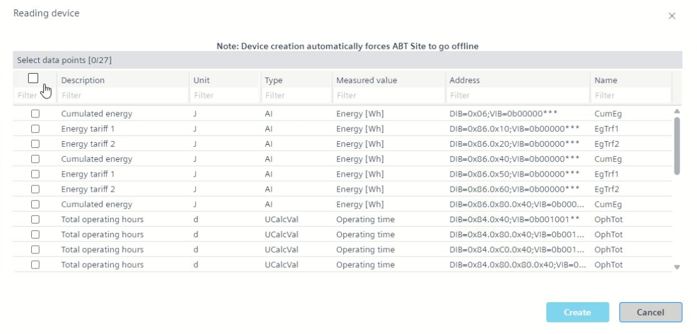
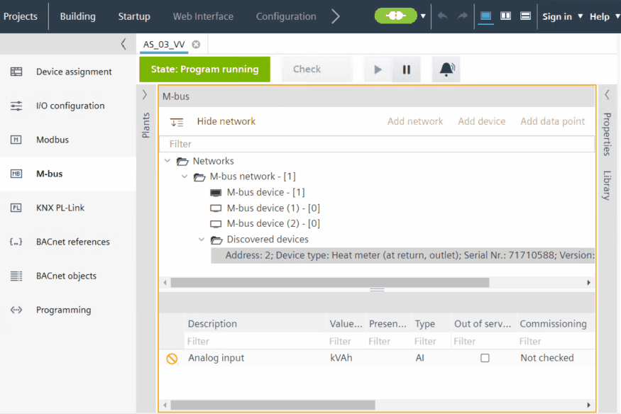
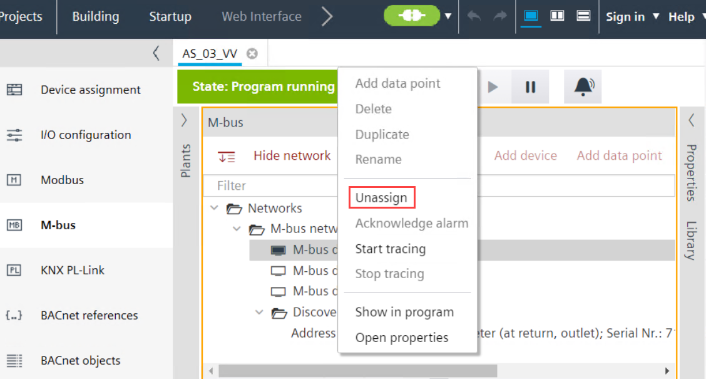

将 /unassign 已发现的设备分配给 M-bus 设备
发现 M-bus 设备后，您可以将它们分配给同一网络中离线创建的 M-bus 设备。
- Scan your M-bus network as described in section M-bus network scan.
- Go to Building > Building structure.
- Open the M-bus task.
- Expand the Discovered devices folder.
- Select a discovered device.
- Right-click and select Read device data.
- The Reading device dialog box displays.
- Click Start.
- Select the required data points and click Create.

- Drag and drop the discovered device on an already offline created M-bus devices of the same network.

- After a few seconds, the discovered device is assigned to the M-bus device and disappears from the Discovered devices folder once assignment is complete.
Note: When you assign a device with primary address 0 from the orphan list to an engineered device with no primary address, after assignment the primary address changes to 253. For multiple devices with primary address 0, the uniqueness check is disabled. - (Optional) To unassign the device, right-click the M-bus device and click Unassign.

- The discovered device is now unassigned from the M-bus device and the device details display again under the Discovered devices folder.
- Check the assigned Serial number and Network address in the Properties tab.

在开始分配之前，请确保离线创建的 M-bus 设备和匹配的发现设备使用相同的主地址，或者离线创建的 M-bus 设备的地址属性字段为空。请注意，如果您将分配的 M-bus 设备复制到自定义库中，它将保留其主地址。因此，请调整或删除该地址以供下次分配。